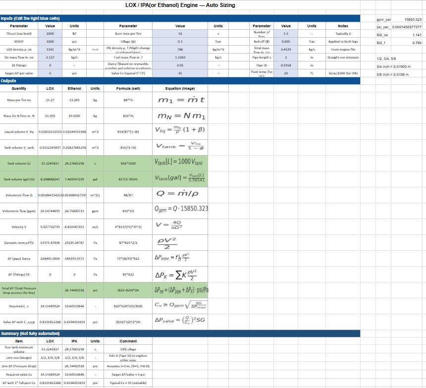
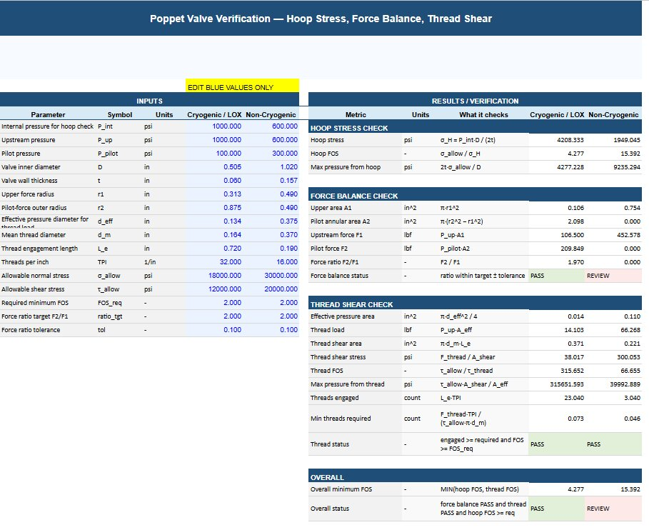

Fluid System Sizing & Trade Study Tool
Python / MATLAB design automation
- Role
- Author
- Organization
- Highlander Space Program, UC Riverside
- Period
- 2025 - Present
- Tag
- SW-01

The problem
Every change to a feed system propagates. Change a tube size and the velocity, Reynolds number, friction factor, and pressure drop all move, which changes the tank pressure you need, which changes the regulator setpoint and the structural requirement on the tank. Doing that by hand takes long enough that in practice you stop exploring alternatives and commit to the first workable answer.
I wanted the team to be able to ask "what if this line were larger" and get an answer immediately, so that design decisions came from comparison rather than from whichever configuration someone happened to calculate first.
What it computes
Given propellant properties, target mass flow, and a proposed line and tank geometry, the tool returns total pressure drop, flow rates, and line and tank sizing.
Flow velocity from continuity:
Reynolds number to establish the flow regime:
Friction factor from the Swamee-Jain explicit approximation, which avoids iterating the implicit Colebrook equation:
Major losses along each run:
Minor losses through valves, elbows, and fittings:
Summed to a system total, which sets the tank pressure required to deliver the design inlet condition at the injector:
A verification tool for the poppet valves
Alongside the feed-system sizing, I built a second automated calculator for the teammates designing our poppet pneumatic valves, so they could check their own work as they went. It runs the three checks that decide whether a valve body holds pressure and actuates as intended: hoop stress in the body, a force balance across the poppet, and thread shear at the joints. Handing them a tool rather than a worksheet meant a valve geometry could be verified in seconds, and it gave the team one shared reference so everyone was checking against the same math.
Why it mattered
The tool turned line sizing into a trade study rather than a guess. It is also what made the diagnosis on Project Clementine immediate: when the measured GN2 pressure drop came in high, the model said what the drop should have been for that geometry, which pointed straight at undersized tubing instead of leaving us to hunt.
What I would do differently
I would build compressible flow handling in from the start. The incompressible relations are correct for the liquid propellant runs, but the high-pressure GN2 side is better described with compressibility and choked flow limits accounted for,
so that the tool covers the pressurant side with the same rigor as the propellant side.

- Python
- MATLAB
- Fluid mechanics
- Trade studies
- Design automation